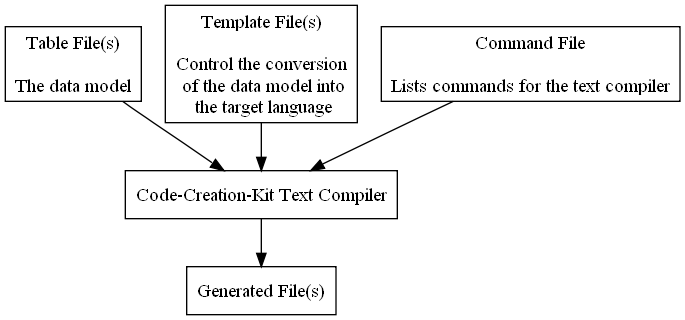
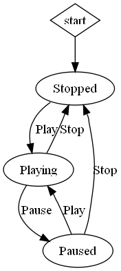

| |


The text compiler can be used to generate any form of text output. To accomplish this it first loads a data model represented as one or more tables, which could be for instance a list of parameters of an application.
In a second step a template file is processed. On the one hand it contains from the viewpoint of the text compiler simply text, maybe the statements of the target language to produce. This text is passed unchanged to the produced output file. On the other hand the template file contains special tags that form macro expressions. These macro expressions instruct the compiler on how to insert the text fragments from the data tables into the output text stream.
To accomplish various generation tasks it is possible to generate macro expressions while processing a template file. It works as if the text compiler would process a template file, generate another template file as output, and process this output file again and again until no macro expressions are contained in the output anymore. The only difference to the described processing is that this is done recursively.
A command file is used to collect all the commands needed for generating, e.g. the instruction to load or unload a table.

This section gives an example of the file types processed by the text compiler. Furthermore it shows how the macro expressions look like and how the table data is inserted into the text stream that is written to the output file.
The table data loaded by the text compiler is stored in the CSV-file format.
Type;Name;Default;Description
int;i;10;Description for i
double;d;23.4;
std::string;s;"""x34""";Description for s
int;;6;This is an incomplete entry
bool;b;true;Description for b
CSV-files can be easily created using a spreadsheet application. This example uses a list of parameters to generate a C++ data class.
| Type | Name | Default | Description |
|---|---|---|---|
| int | i | 10 | Description for i |
| double | d | 23.4 | |
| std::string | s | "x34" | Description for s |
| int | 6 | This is an incomplete entry | |
| bool | b | true | Description for b |
The template file below contains two macros. The first one is located in the declaration section. It consists of the line containing three ENTRY tags and one ANY tag. A tag is surrounded by additional markup characters to avoid name clashes with the target language. The default markup uses box brackets to improve the readability of the template files. The Parameter following the entry tags denotes the heading of the column to read.
In this case the text compiler finds a line containing tags. It takes the full line including the new line character and processes it as a macro. Then it looks for loaded tables containing the given column headings. A table containing the headings is read row by row, the ENTRY tags are substituted with content the corresponding table entries and the produced line is written to the output file. It is also possible to read a table from left to right passing the row headings as parameter.
The substitution fails if a table entry is empty. That’s why the incomplete table entry produces no output. This default behavior can be changed by inserting additional tags after the ENTRY tag. This is done for the parameter description using the ANY tag which causes the entry to be substituted successfully no matter what the content of the table looks like.
The second macro uses the macro marking tags MACRO_BEGIN and MACRO_END to define the position of the macro. They are used to create macros that span multiple lines or for macros that are inserted into a single line as in this example.
Additionally the block marking tags BEGIN and END are used. Block marking tags can be nested. They form an inner block using the OR tag to define multiple alternatives. The text compiler inserts the first alternative that is expandable. In this example alternatives are used together with the FIRST_TIME tag that can only be substituted successfully with an empty string the first time the macro expands. This way it is possible to create the syntax for the C++ class initializer list.
#include <string>
class CDataClass
{
public:
//declaration
[ENTRY]["Type"] m_[ENTRY]["Name"]; //[ENTRY]["Description"][ANY]
//constructor
CDataClass()
[MACRO_BEGIN][BEGIN][IF][FIRST_TIME]: [OR], [END]m_[ENTRY]["Name"]([ENTRY]["Default"])[MACRO_END]
{
}
};
The output file contains the compilation of the text fragments from the table and the template file.
#include <string> class CDataClass { public: //declaration int m_i; //Description for i double m_d; // std::string m_s; //Description for s bool m_b; //Description for b //constructor CDataClass() : m_i(10), m_d(23.4), m_s("x34"), m_b(true) { } };
The command file is processed line by line. Every line contains a command for the text compiler using command line style syntax.
--load-table simple.csv --template-source-file CDataClass.tpl.h --output-file CDataClass.gen.h
This example extends the previous one by the use of multiple data tables, recursive macro processing, the use of multi line macros and the use of additional parameters from the command file to generate a C++ and a Visual Basic .NET data class.
The list of parameters from the previous example is extended by minimum and maximum values to generate a method for clipping the class data members.
| Type | Name | Default | Min | Max | Description |
|---|---|---|---|---|---|
| integer | i | 10 | 2 | 100 | Description for i |
| double | d | 23.4 | -234.5 | 300 | |
| string | s | "x34" | Description for s | ||
| integer | 6 | This is an incomplete entry | |||
| boolean | b | true | Description for b |
Two additional tables are added to map the listed general types to the corresponding types of the generated language.
| integer | double | string | boolean |
|---|---|---|---|
| int | double | std::string | bool |
| integer | double | string | boolean |
|---|---|---|---|
| Integer | Double | String | Boolean |
The template from the previous example is extended by using a parameter passed from the command file that is used for the class name, the mapping of the general type to the corresponding C++ type, and a clipping method using multi line macros.
For customizing a template it is possible to pass additional parameters from the command files. The parameters are collected in another table so that they can be accessed like loaded tables using the ENTRY tags. This allows using the shown template to generate several different classes.
The declaration section shows a tag with a dot as infix. This dot denotes a delayed processing of the tag. When the macro is processed the first time the marked ENTRY tag is treated as normal text. The macro is expanded and afterwards the dot is removed activating the tag. This will cause the generated line to be detected as macro and it will be processed. Since the general type has been entered by the previous generation step as column heading the C++ type can be looked up in a second step. It is possible to add as many delay dots as needed to a tag. In every processing step one dot is removed allowing cascading of multiple macros.
The clip method shows the use of multi line macros. There are two different ways of using the MACRO_BEGIN and MACRO_END tags. The if-statement for checking the maximum shows one possibility. All enclosed text and new line characters are reproduced each time the macro is expanded. But using this style makes it hard to keep track of the indentation. The second possibility uses the build in preprocessor to achieve the same result making it easier to produce the correct indentation. The preprocessor trims all surrounding white space including the new line character from a line if it finds a trailing TRIM tag.
#include <string> class [ENTRY]["Class Name"] { public: //declaration [ENTRY.]["[ENTRY]["Type"]"] m_[ENTRY]["Name"]; //[ENTRY]["Description"][ANY] //constructor [ENTRY]["Class Name"]() [BEGIN][BEGIN][IF][FIRST_TIME]: [OR], [END]m_[ENTRY]["Name"]([ENTRY]["Default"])[END] { } unsigned int Clip() { unsigned int clipCounter = 0; //clip max [MACRO_BEGIN] if ( m_[ENTRY]["Name"] > [ENTRY]["Max"] ) { m_[ENTRY]["Name"] = [ENTRY]["Max"]; ++clipCounter; } [MACRO_END] //clip min [MACRO_BEGIN][TRIM] if ( m_[ENTRY]["Name"] < [ENTRY]["Min"] ) { m_[ENTRY]["Name"] = [ENTRY]["Min"]; ++clipCounter; } [MACRO_END][TRIM] return clipCounter; } };
This is the generated C++ data class.
#include <string> class CMyData { public: //declaration int m_i; //Description for i double m_d; // std::string m_s; //Description for s bool m_b; //Description for b //constructor CMyData() : m_i(10) , m_d(23.4) , m_s("x34") , m_b(true) { } unsigned int Clip() { unsigned int clipCounter = 0; //clip max if ( m_i > 100 ) { m_i = 100; ++clipCounter; } if ( m_d > 300 ) { m_d = 300; ++clipCounter; } //clip min if ( m_i < 2 ) { m_i = 2; ++clipCounter; } if ( m_d < -234.5 ) { m_d = -234.5; ++clipCounter; } return clipCounter; } };
This is the template for the Visual Basic .NET data class.
Imports System Class [ENTRY]["Class Name"] 'declaration Public m_[ENTRY]["Name"] As [ENTRY.]["[ENTRY]["Type"]"] = [ENTRY]["Default"] '[ENTRY]["Description"][ANY] Public Function Clip() As UInteger 'clip max [MACRO_BEGIN] If m_[ENTRY]["Name"] > [ENTRY]["Max"] Then m_[ENTRY]["Name"] = [ENTRY]["Max"] Clip += 1 End If [MACRO_END] 'clip min [MACRO_BEGIN][TRIM] If m_[ENTRY]["Name"] < [ENTRY]["Min"] Then m_[ENTRY]["Name"] = [ENTRY]["Min"] Clip += 1 End If [MACRO_END][TRIM] End Function End Class
This is the generated Visual Basic .NET data class.
Imports System Class MyData 'declaration Public m_i As Integer = 10 'Description for i Public m_d As Double = 23.4 ' Public m_s As String = "x34" 'Description for s Public m_b As Boolean = true 'Description for b Public Function Clip() As UInteger 'clip max If m_i > 100 Then m_i = 100 Clip += 1 End If If m_d > 300 Then m_d = 300 Clip += 1 End If 'clip min If m_i < 2 Then m_i = 2 Clip += 1 End If If m_d < -234.5 Then m_d = -234.5 Clip += 1 End If End Function End Class
The command file shows the usage of the option for specifying the reading direction of a table to top down. This is used to avoid reading the tables from left to right because only one ENTRY tag is used to map the types and can be found as row heading in multiple places making it impossible for the text compiler to automatically find the correct table to read.
The template processing command is written using short option names in this command file. The parameter option p is used to pass the class names. It is possible to pass multiple strings using the first equal sign as delimiter to separate column header from table entry. Multiple table entries are entered in a column if parameters with the same column name are provided. This is done in the order they are listed in the command.
After the C++ data class is generated the C++ mapping table is unloaded and the Visual Basic mapping table is loaded to generate the Visual Basic class.
--load-table simple_extended.csv --top-down --load-table simple_extended.map_cpp.csv --top-down -s CDataClass.tpl.h -o CMyData.gen.h -p "Class Name=CMyData" --unload-table simple_extended.map_cpp.csv --load-table simple_extended.map_vbnet.csv --top-down -s CDataClass.tpl.vb -o MyData.gen.vb -p "Class Name=MyData"
This example shows how to describe a state machine using a matrix. The matrix is used to generate a C++ state machine class. The state machine class is designed to derive another class from it that reacts to the state changes.
The doxygen documentation tool is used together with the graphviz dot graph visualization software to create the documentation for the state machine including a graph of the states. The dot graph description that is generated causes doxygen to produce a graph of the states and transitions when it is run. The example folder contains a template to generate code for a console application used for testing the state machine.
| Actions\States | Action Name | Action Description | State 1 | State 2 | State 3 |
|---|---|---|---|---|---|
| State Name | Stopped | Playing | Paused | ||
| State Description | The player is stopped. | The player is playing. | The player is paused. | ||
| Initial State | yes | ||||
| Action 1 | Play | The user pressed the play button. | Playing | Playing | |
| Action 2 | Stop | The user pressed the stop button. | Stopped | Stopped | |
| Action 3 | Pause | The user pressed the pause button. | Paused |
This is the produced graph showing the states and transitions.

This is the template for creating a C++ state machine. The macros are commented in the code using the COMMENT tag.
[COMMENT] Produces a switch/case state machine class [COMMENT] Includes a dot graph description [COMMENT] The graph is produced using Doxygen and Graphviz Dot [COMMENT] see www.doxygen.org and www.graphviz.org [COMMENT] Required Parameters: [COMMENT] "Machine Name" - the name of the class, e.g. CStateMachine //-------------------------------------------------------------------- /** \file \brief WARNING CONTAINS GENERATED CODE! ALL CHANGES WILL BE LOST! */ //-------------------------------------------------------------------- #ifndef INCLUDED_[ENTRY]["Machine Name"][TO_UPPER]_TPL_H #define INCLUDED_[ENTRY]["Machine Name"][TO_UPPER]_TPL_H #if !defined (COMPILER_LACKS_PRAGMA_ONCE) #pragma once #endif [COMMENT] The SET_RECURSION_LEVEL_LIMIT directive can be used to view and [COMMENT] debug intermediate generation steps. [COMMENT] Remove the trailing _OFF in the following directive to see [COMMENT] the first level of processing after the generation is run again. [SET_RECURSION_LEVEL_LIMIT_OFF][TRIM] //-------------------------------------------------------------------- /** \class [ENTRY]["Machine Name"] \brief State machine '[ENTRY]["Machine Name"]' with dot graph as documentation generated from a table. Derive from this class to handle the state transitions. \dot digraph [ENTRY]["Machine Name"] { start_state_[ENTRY]["Machine Name"] [shape=diamond,label="start"]; start_state_[ENTRY]["Machine Name"] -> [ENTRY.]["State Name"];[IF.][ENTRY.]["Initial State"] [ENTRY]["State Name"]; [COMMENT] first go top down through all actions, [COMMENT] then go from left to right through states [COMMENT] expanding if transition is entered [ENTRY.]["State Name"] -> [ENTRY.]["[ENTRY]["Actions\\States"]"][label=[ENTRY]["Action Name"]]; } \enddot */ //-------------------------------------------------------------------- class [ENTRY]["Machine Name"] { public: ///Lists all possible states enum EState { e[ENTRY]["State Name"], ///<[ENTRY]["State Description"][ANY] eNumberOfStates ///<Can be used for iterating over the states }; [COMMENT] set initial state marked with yes (or anything else), [COMMENT] build fails if not exactly one state is marked ///Initializes the state machine [ENTRY]["Machine Name"]() : [BEGIN]m_currentState(e[ENTRY]["State Name"][IF][ENTRY]["Initial State"])[OR][IF][LAST_TIME] ---initial state not set--- [END] { } ///- virtual ~[ENTRY]["Machine Name"]() {} [COMMENT] expand an action function for [COMMENT] all entries in column "Action Name" as first step [MACRO_BEGIN][TRIM] ///Handle action [ENTRY]["Action Name"]: [ENTRY]["Action Description"][ANY] virtual void action[ENTRY]["Action Name"]() { switch ( m_currentState) { [COMMENT] go from left to right through all states [COMMENT] and add a transition case handler [COMMENT] if a transition target state is entered [MACRO_BEGIN.][TRIM.] case e[ENTRY.]["State Name"]: exit[ENTRY.]["State Name"](); [COMMENT] [ENTRY]["Actions\\States"] expands to [COMMENT] the row name of the action enter[ENTRY.]["[ENTRY]["Actions\\States"]"](); m_currentState = e[ENTRY.]["[ENTRY]["Actions\\States"]"]; break; [MACRO_END.][TRIM.] default: actionIgnored(); } } [MACRO_END][TRIM] [COMMENT] List enter and exit for all states [MACRO_BEGIN][TRIM] ///Called when state [ENTRY]["State Name"] is entered virtual void enter[ENTRY]["State Name"]() {} ///Called when state [ENTRY]["State Name"] is exited virtual void exit[ENTRY]["State Name"]() {} [MACRO_END][TRIM] ///Called when an action does not trigger a transition virtual void actionIgnored() {} ///Returns the current state EState getCurrentState() { return m_currentState; } private: EState m_currentState; ///< holds the current state of the machine }; #endif /* INCLUDED_[ENTRY]["Machine Name"][TO_UPPER]_TPL_H */
This is the generated C++ state machine code. It contains only a few states to not get to large for an example, but it can be extended to any size by extending the matrix. The example folder contains another matrix having more states.
//-------------------------------------------------------------------- /** \file \brief WARNING CONTAINS GENERATED CODE! ALL CHANGES WILL BE LOST! */ //-------------------------------------------------------------------- #ifndef INCLUDED_CDPLAYERSTATEMACHINE_TPL_H #define INCLUDED_CDPLAYERSTATEMACHINE_TPL_H #if !defined (COMPILER_LACKS_PRAGMA_ONCE) #pragma once #endif //-------------------------------------------------------------------- /** \class CDPlayerStateMachine \brief State machine 'CDPlayerStateMachine' with dot graph as documentation generated from a table. Derive from this class to handle the state transitions. \dot digraph CDPlayerStateMachine { start_state_CDPlayerStateMachine [shape=diamond,label="start"]; start_state_CDPlayerStateMachine -> Stopped; Stopped; Playing; Paused; Stopped -> Playing[label=Play]; Paused -> Playing[label=Play]; Playing -> Stopped[label=Stop]; Paused -> Stopped[label=Stop]; Playing -> Paused[label=Pause]; } \enddot */ //-------------------------------------------------------------------- class CDPlayerStateMachine { public: ///Lists all possible states enum EState { eStopped, ///<The player is stopped. ePlaying, ///<The player is playing. ePaused, ///<The player is paused. eNumberOfStates ///<Can be used for iterating over the states }; ///Initializes the state machine CDPlayerStateMachine() : m_currentState(eStopped) { } ///- virtual ~CDPlayerStateMachine() {} ///Handle action Play: The user pressed the play button. virtual void actionPlay() { switch ( m_currentState) { case eStopped: exitStopped(); enterPlaying(); m_currentState = ePlaying; break; case ePaused: exitPaused(); enterPlaying(); m_currentState = ePlaying; break; default: actionIgnored(); } } ///Handle action Stop: The user pressed the stop button. virtual void actionStop() { switch ( m_currentState) { case ePlaying: exitPlaying(); enterStopped(); m_currentState = eStopped; break; case ePaused: exitPaused(); enterStopped(); m_currentState = eStopped; break; default: actionIgnored(); } } ///Handle action Pause: The user pressed the pause button. virtual void actionPause() { switch ( m_currentState) { case ePlaying: exitPlaying(); enterPaused(); m_currentState = ePaused; break; default: actionIgnored(); } } ///Called when state Stopped is entered virtual void enterStopped() {} ///Called when state Stopped is exited virtual void exitStopped() {} ///Called when state Playing is entered virtual void enterPlaying() {} ///Called when state Playing is exited virtual void exitPlaying() {} ///Called when state Paused is entered virtual void enterPaused() {} ///Called when state Paused is exited virtual void exitPaused() {} ///Called when an action does not trigger a transition virtual void actionIgnored() {} ///Returns the current state EState getCurrentState() { return m_currentState; } private: EState m_currentState; ///< holds the current state of the machine }; #endif /* INCLUDED_CDPLAYERSTATEMACHINE_TPL_H */
Inline templates are placed into a code file for in-place code generation. This works line based using the comment syntax of the source language. The lines of an inline template are marked with a prefix and an optional postfix as template lines. The following C++ example uses the prefix //<> for this purpose. The inline template lines are ignored by the C++ compiler because they form C++ line comments. Prefix and postfix are removed by the text compiler before processing. Generated code lines are marked with an is-generated-postfix. This allows removing old generated code lines when running the code generation again. The following C++ example uses //$ as is-generated-postfix. Only lines marked as inline template are processed by the text compiler. All other lines are directly passed to the output file.
WARNING: Use this feature carefully to prevent data loss. Any line ending with the is-generated-postfix is removed by the text compiler. Backup your code before using in-place code generation.
//--------------------------------------------------------------------
/**
\file
\brief CDPlayerStateMachine with inline templates
*/
//--------------------------------------------------------------------
#ifndef INCLUDED_CDPLAYERSTATEMACHINEINLINE_H_5742456
#define INCLUDED_CDPLAYERSTATEMACHINEINLINE_H_5742456
//--------------------------------------------------------------------
/**
\class CDPlayerStatemachine
\brief State machine CDPlayerStatemachine with dot graph as
documentation generated from a table.
Derive from this class to handle the state transitions.
\dot
digraph CDPlayerStatemachine
{
//<>start_state_[ENTRY]["Machine Name"] [shape=diamond,label="start"];
//<>start_state_[ENTRY]["Machine Name"] -> [ENTRY.]["State Name"];[IF.][ENTRY.]["Initial State"]
//<>[ENTRY]["State Name"];
Stopped; //$
Playing; //$
Paused; //$
//<>[COMMENT] first go top down through all actions,
//<>[COMMENT] then go from left to right through states
//<>[COMMENT] expanding if transition is entered
//<>[ENTRY.]["State Name"] -> [ENTRY.]["[ENTRY]["Actions\\States"]"][label=[ENTRY]["Action Name"]];
Stopped -> Playing[label=Play]; //$
Paused -> Playing[label=Play]; //$
Playing -> Stopped[label=Stop]; //$
Paused -> Stopped[label=Stop]; //$
Playing -> Paused[label=Pause]; //$
}
\enddot
*/
//--------------------------------------------------------------------
class CDPlayerStatemachine
{
public:
/** \brief Lists all possible states.*/
enum EState
{
//<>[MACRO_BEGIN][TRIM]
//<>/** \brief [ENTRY]["State Description"][ANY]*/
//<>e[ENTRY]["State Name"],
//<>[MACRO_END][TRIM]
/** \brief The player is stopped.*/ //$
eStopped, //$
/** \brief The player is playing.*/ //$
ePlaying, //$
/** \brief The player is paused.*/ //$
ePaused, //$
/** \brief Can be used for iterating over the states.*/
eNumberOfStates
};
//<>[COMMENT] set initial state marked with yes (or anything else),
//<>[COMMENT] build fails if not exactly one state is marked
/** \brief Initializes the state machine.*/
CDPlayerStatemachine()
//<>: [BEGIN]m_currentState(e[ENTRY]["State Name"][IF][ENTRY]["Initial State"])[OR][IF][LAST_TIME] ---initial state not set--- [END]
: m_currentState(eStopped) //$
{
}
/** \brief Make the destructor virtual.*/
virtual ~CDPlayerStatemachine()
{
}
//<>[COMMENT] expand an action function for
//<>[COMMENT] all entries in column "Action Name" as first step
//<>[MACRO_BEGIN][TRIM]
//<>/** \brief Handle action [ENTRY]["Action Name"]: [ENTRY]["Action Description"][ANY]*/
//<>virtual void action[ENTRY]["Action Name"]()
//<>{
//<> switch ( m_currentState)
//<> {
//<> [COMMENT] go from left to right through all states
//<> [COMMENT] and add a transition case handler
//<> [COMMENT] if a transition target state is entered
//<> [MACRO_BEGIN.][TRIM.]
//<> case e[ENTRY.]["State Name"]:
//<> exit[ENTRY.]["State Name"]();
//<> [COMMENT] [ENTRY]["Actions\\States"] expands to
//<> [COMMENT] the row name of the action
//<> enter[ENTRY.]["[ENTRY]["Actions\\States"]"]();
//<> m_currentState = e[ENTRY.]["[ENTRY]["Actions\\States"]"];
//<> break;
//<> [MACRO_END.][TRIM.]
//<>
//<> default:
//<> actionIgnored();
//<> }
//<>}
//<>
//<>[MACRO_END][TRIM]
/** \brief Handle action Play: The user pressed the play button.*/ //$
virtual void actionPlay() //$
{ //$
switch ( m_currentState) //$
{ //$
case eStopped: //$
exitStopped(); //$
enterPlaying(); //$
m_currentState = ePlaying; //$
break; //$
case ePaused: //$
exitPaused(); //$
enterPlaying(); //$
m_currentState = ePlaying; //$
break; //$
//$
default: //$
actionIgnored(); //$
} //$
} //$
//$
/** \brief Handle action Stop: The user pressed the stop button.*/ //$
virtual void actionStop() //$
{ //$
switch ( m_currentState) //$
{ //$
case ePlaying: //$
exitPlaying(); //$
enterStopped(); //$
m_currentState = eStopped; //$
break; //$
case ePaused: //$
exitPaused(); //$
enterStopped(); //$
m_currentState = eStopped; //$
break; //$
//$
default: //$
actionIgnored(); //$
} //$
} //$
//$
/** \brief Handle action Pause: The user pressed the pause button.*/ //$
virtual void actionPause() //$
{ //$
switch ( m_currentState) //$
{ //$
case ePlaying: //$
exitPlaying(); //$
enterPaused(); //$
m_currentState = ePaused; //$
break; //$
//$
default: //$
actionIgnored(); //$
} //$
} //$
//$
//<>[COMMENT] List enter and exit for all states
//<>[MACRO_BEGIN][TRIM]
//<>/** \brief Called when state [ENTRY]["State Name"] is entered.*/
//<>virtual void enter[ENTRY]["State Name"]() {}
//<>/** \brief Called when state [ENTRY]["State Name"] is exited.*/
//<>virtual void exit[ENTRY]["State Name"]() {}
//<>
//<>[MACRO_END][TRIM]
/** \brief Called when state Stopped is entered.*/ //$
virtual void enterStopped() {} //$
/** \brief Called when state Stopped is exited.*/ //$
virtual void exitStopped() {} //$
//$
/** \brief Called when state Playing is entered.*/ //$
virtual void enterPlaying() {} //$
/** \brief Called when state Playing is exited.*/ //$
virtual void exitPlaying() {} //$
//$
/** \brief Called when state Paused is entered.*/ //$
virtual void enterPaused() {} //$
/** \brief Called when state Paused is exited.*/ //$
virtual void exitPaused() {} //$
//$
/** \brief Called when an action does not trigger a transition.*/
virtual void actionIgnored() {}
/** \brief Returns the current state.*/
EState getCurrentState()
{
return m_currentState;
}
private:
/** \brief holds the current state of the machine.*/
EState m_currentState;
};
#endif /* INCLUDED_CDPLAYERSTATEMACHINEINLINE_H_5742456 */
This is the used command file:
--load-table advanced.csv # The recycle option tries put the processed file into the recycle bin # of the system each time the processing replaces it to prevent data loss. -s CDPlayerStatemachine.h --inlined -b //<> -d //$ --inline-pad 90 --recycle -s main.cpp --inlined -b //<> -d //$ --inline-pad 90 --recycle